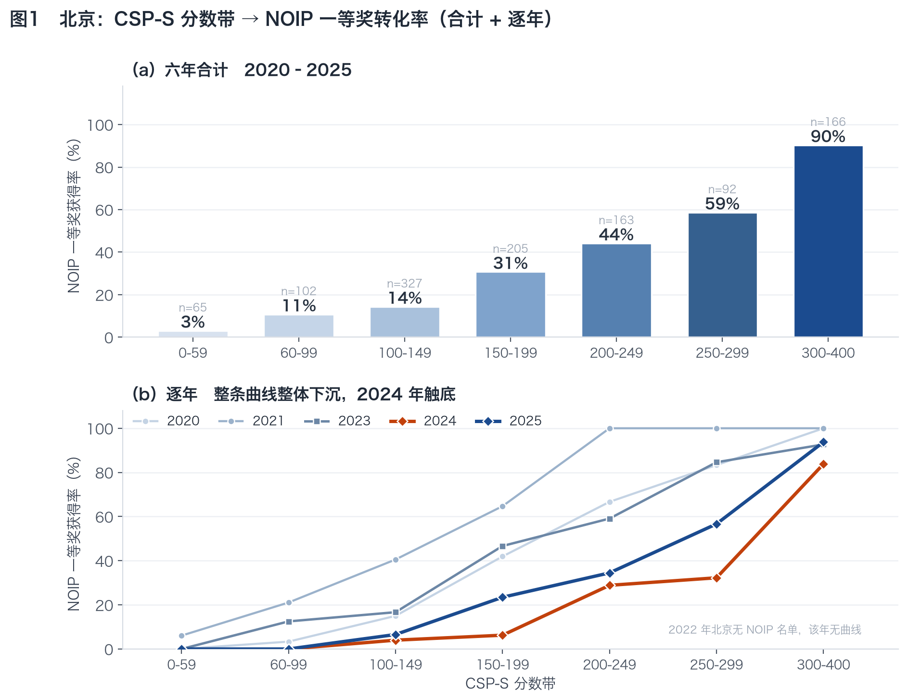
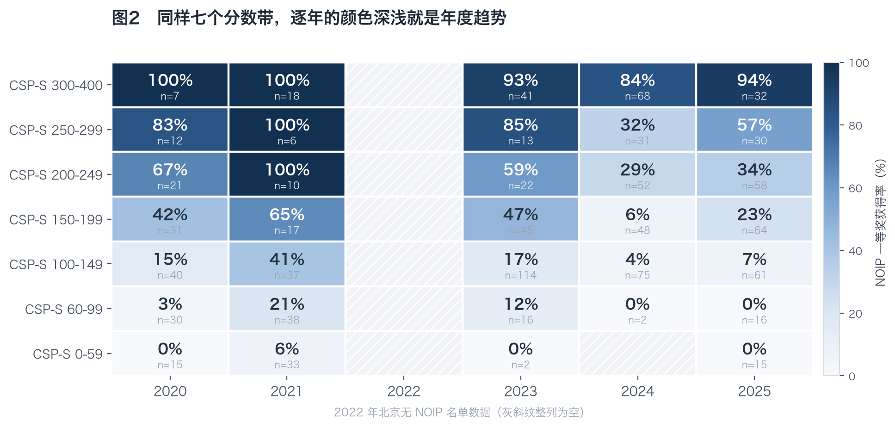
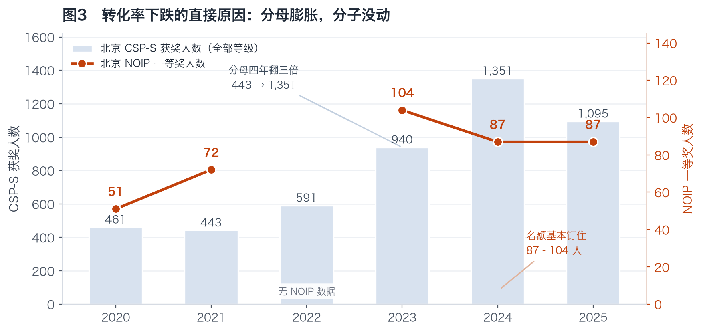
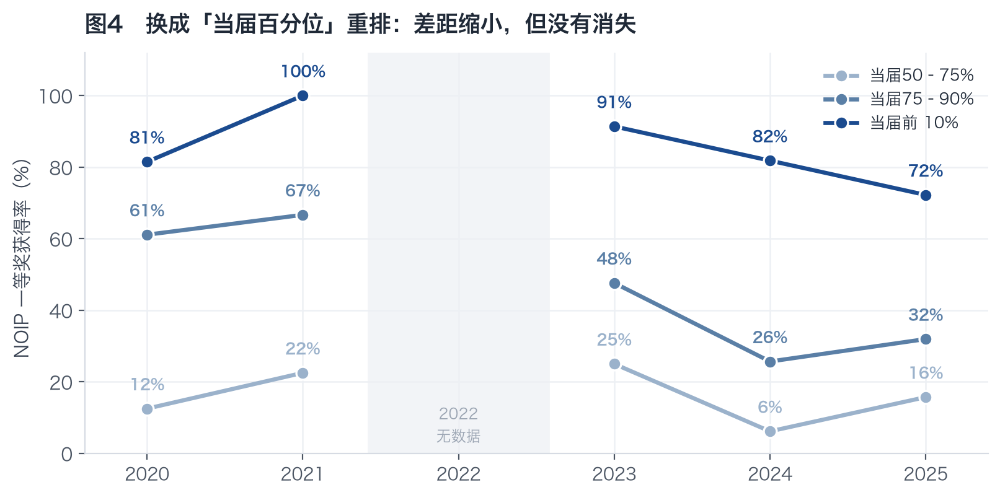

同一个分数带，在不同的年份值多少钱？用 2020–2025 年 CCF 官方公示名单里 1,120 组北京双榜样本回答：这条曲线的形状六年没变，但整条曲线在往下沉。
(a) 是六年合并的原图：横轴把 CSP-S 分数切成七个带，纵轴是这个带里最终拿到 NOIP 一等奖的比例。 单调上升，没有任何反转——150 分以下是个位数到 14%，300 分以上是 90%，中间每一档的斜率都很清楚。
把同一张图按年份拆开，就是 (b)。五条曲线（2022 年北京无 NOIP 名单数据）形状几乎平行， 但位置一路下沉：2020 最高，2024 触底，2025 略有回升。

读图要点只有两条：
n 一起读，不要只看柱子高低。
把图1(b) 拆成数字。括号内是该格子的样本量，空白表示当年该档无人，2022 整列为空。
| CSP-S 分数带 | 2020 | 2021 | 2022 | 2023 | 2024 | 2025 | 六年合计 |
|---|---|---|---|---|---|---|---|
| 300–400 | 100% (7) | 100% (18) | — | 93% (41) | 84% (68) | 94% (32) | 90% (166) |
| 250–299 | 83% (12) | 100% (6) | — | 85% (13) | 32% (31) | 57% (30) | 59% (92) |
| 200–249 | 67% (21) | 100% (10) | — | 59% (22) | 29% (52) | 34% (58) | 44% (163) |
| 150–199 | 42% (31) | 65% (17) | — | 47% (45) | 6% (48) | 23% (64) | 31% (205) |
| 100–149 | 15% (40) | 41% (37) | — | 17% (114) | 4% (75) | 7% (61) | 14% (327) |
| 60–99 | 3% (30) | 21% (38) | — | 12% (16) | 0% (2) | 0% (16) | 11% (102) |
| 0–59 | 0% (15) | 6% (33) | — | 0% (2) | — | 0% (15) | 3% (65) |
合计行与图1(a) 的柱子一致。2022 年北京无 NOIP 名单数据，故整列为空。
两个细节值得单独看一眼：
同一份数据换成色块，看“整条曲线”怎么移动会比折线更直观：颜色从深到浅，就是从“稳拿”到“基本无望”。

从色块能读出三件事：
转化率是一个分数：分母是 CSP-S 获奖人数，分子是最终拿到 NOIP 一等奖的人数。北京这六年的问题是分母翻了近三倍，分子原地不动。

| 年份 | 北京 CSP-S 获奖 | 北京 NOIP 一等奖 | 名额比 | 整体转化率 |
|---|---|---|---|---|
| 2020 | 461 | 51 | 11.1% | 32.7% |
| 2021 | 443 | 72 | 16.3% | 44.0% |
| 2022 | 591 | 无数据 | — | — |
| 2023 | 940 | 104 | 11.1% | 41.1% |
| 2024 | 1,351 | 87 | 6.4% | 31.9% |
| 2025 | 1,095 | 87 | 7.9% | 31.2% |
名额比 = 北京 NOIP 一等奖人数 ÷ 同届北京 CSP-S 获奖人数。整体转化率 = 匹配样本内拿到 NOIP 一等奖的比例。
这个结构性挤压的后果很直接：2024 年北京每 100 个 CSP-S 获奖者里，只有 6.4 个能拿到 NOIP 一等奖。 换句话说，CSP-S 获奖本身已经不是稀缺资源了，NOIP 一等奖才是——而且它的总量在 87–104 人这个区间已经钉了三年。
上面的逐年比较有一个隐患：CSP-S 的分数本身在通胀。2020 年北京 CSP-S 获奖者均分 118 分，2024 年是 155 分。 同样一个“250 分”，在 2020 年和 2024 年对应的相对位置完全不同——直接按绝对分带比较，会把通胀算成“学生变差”。
换个尺子：不看绝对分，看当届百分位——把每年的北京 CSP-S 获奖者按当年分数排序，取前 10%、75–90%、50–75% 三档，再算转化率。

结果很有意思，而且给出一个更精确的答案：
2021 年北京 CSP-S 250 分以上是 100% 拿一等，2024 年同样的 250–299 只有 32%。分数线的含义每年都在变， 真正稳定的参照是当届百分位：北京近三年站在当届 CSP-S 获奖者前 10% 的人，拿 NOIP 一等的概率是 72%–91%； 掉到 75–90% 只剩 26%–48%，50% 之后基本无望。
六年合计看，250 分以上拿一等的概率是 59%（250–299）和 90%（300+），而 200–249 只有 44%、150–199 只有 31%。 但从 2024 年起，250–299 已经跌到 32%。用合并口径做的规划，在近两年会系统性高估成功率—— 做目标时请用最近两年的数据，而不是六年平均。
北京 NOIP 一等奖总量三年稳定在 87–104 人。这意味着北京每年只有不到一百个一等奖名额， 而 CSP-S 获奖者有上千人。在同一个奖级内多刷十几分，对结果的边际影响远小于跨过档次边界。 如果目标是省队/NOI，更该关注的是 NOIP 分数在全国的位次，而不是 CSP-S 的绝对分。